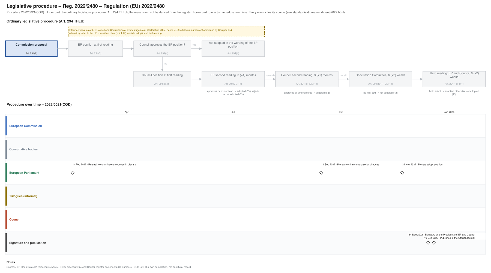

← All procedures · Regulation timeline
Procedure 2022/0021(COD), completed. Drawing: SVG · PNG · PDF (A3) · draw.io

| Date | Actor | Event | Document | Source |
|---|---|---|---|---|
| 2022-02-14 | European Parliament | Referral to committee announced in plenary | EP Open Data API, procedure 2022-0021 (REFERRAL) | |
| 2022-09-14 | European Parliament | Plenary confirms mandate for trilogues | EP Open Data API, procedure 2022-0021 (PLENARY_ENDORSE_COMMITTEE_INTERINSTITUTIONAL_NEGOTIATIONS) | |
| 2022-11-22 | European Parliament | Plenary adopt position | EP Open Data API, procedure 2022-0021 (PLENARY_ADOPT_POSITION) | |
| 2022-12-14 | Signature and publication | Signature by the Presidents of EP and Council | EP Open Data API, procedure 2022-0021 (SIGNATURE) | |
| 2022-12-19 | Signature and publication | Published in the Official Journal | EP Open Data API, procedure 2022-0021 (PUBLICATION_OFFICIAL_JOURNAL) |
| Date | Document | Kind | Subject |
|---|---|---|---|
| 2022-07-14 | A9-0205/2022 | ep-report | REPORT on the proposal for a regulation of the European Parliament and of the Council amending Regulation (EU) No 1025/2012 as regards the decisions of … |
{kind=link}
{kind=link}